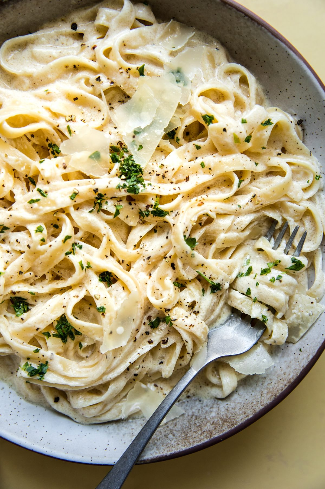

Alfredo Sauce

Description
Easy, Creamy Alfredo Sauce Made at Home!
Ingredients
- 1/2 Cup Butter
- 1 1/2 Cups Heavy Whipping Cream
- 2 Cups Parmesan Cheese
- 2 Teaspoons Garlic
- Salt & Pepper To Taste
Steps
- Add butter and cream to large skillet.
- Simmer over low heat for 2 minutes.
- Whisk in garlic, salt, and pepper.
- Whisk in parmesan until melted.
- Serve immediately.